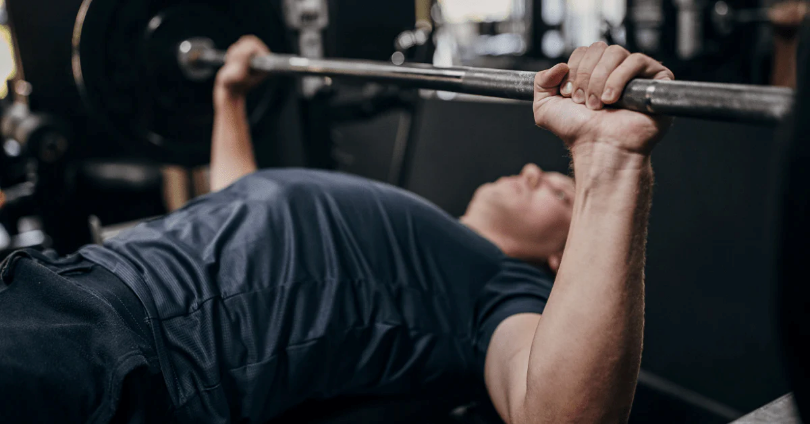
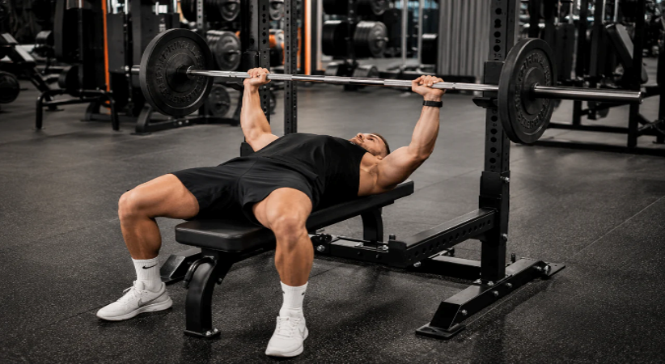
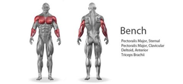

Bench Press
Mastery
Everything you need to build a stronger, cleaner bench press — from beginner fundamentals to advanced technique.

What It Is
The bench press is a compound exercise performed by lying down and un-racking a loaded barbell, lowering it till it touches your chest, and pushing the barbell back up until elbows are locked out. USA TODAY stated, “by far the most popular weightlifting exercise – among both men and women – is the bench press.” So, if you’re looking to start lifting, the bench press is essential.

Why It Works
The bench press is a compound exercise meaning you’re training multiple muscles at once with just one exercise. This is especially useful in new lifters (0-2 years) who will gain muscle much faster than those who have been lifting many years. Its simply more “bang for your buck” cause you get to train multiple muscles at once. The main muscles trained are the pectorals (chest muscles or pecs), the anterior deltoids (the round front part of your shoulders), and the triceps (the large long muscle on the backside of your upper arm). In addition there are many other secondary muscles being trained such as lateral deltoids (side shoulder), abdominals (abs), and even some back muscles. Its also fair to mention that if you tell people you work out the first question they’ll probably ask is how much you bench press.